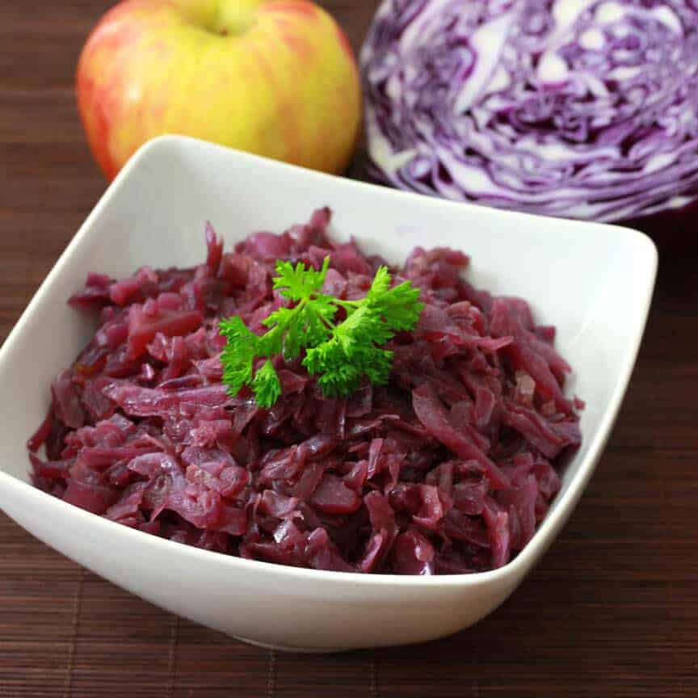

Rotkohl

Description
Rotkohl has been around for, well, forever.
And that’s how it usually works, doesn’t it?
Great dishes stand the test of time.
And Rotkohl takes the humble red cabbage and
transforms it into a wonderful dish that
traditionally accompanies beef roasts,
Rouladen and Sauerbraten. For any of
you who have traveled to Germany, you’ll
remember this delicious dish. This recipe
is like the Rotkohl you enjoyed at your
favorite German restaurants or in your favorite German homes.
Ingredients
- 1 1/2 lbs red cabbage, sliced
- 1 large onion, diced
- 1 large granny smith apple, diced
- 1/4 cup butter
- 3 tbsp red wine vinegar
- 1/2 cup vegetable broth
- 1 tsp sugar
- 1 tsp salt
Steps
- Melt the butter in a Dutch oven over medium-high heat and cook the onions until just beginning to brown, 7-10 minutes.
- Add the cabbage and cook for 5 minutes.
- Add the apple, broth, vinegar, sugar, and salt.
- Bring to a boil, reduce heat to low, simmer for 2 hours stirring occasionally.